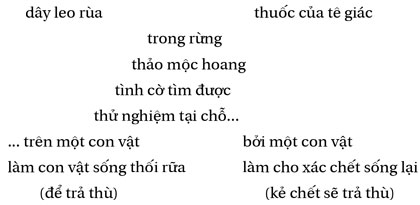
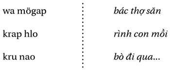

Màn đêm buông xuống: thời khắc của tự vấn; thời khắc của những thắc mắc không được bộc lộ ra dưới ánh sáng ban ngày… Giống như con hổ, các thắc mắc thu mình lại trong không gian nhỏ hẹp… Khai triển, tích tụ sức mạnh của nó… Bạn có sợ hổ không?
Anna Kavan
Đến điểm này, cuốn sách-chuyện kể, cuốn sách- truyện và sách “hình ảnh” có thể đi theo nhiều hướng: về phía những thầy pháp hay phía những phù thủy ám hại, trong rừng của những người đi săn hay trong rừng của những người bị ám, cuối cùng cách nào cũng dẫn đến chỗ tận cùng là điên loạn, như là trường hợp giới hạn. Chẳng có trật tự bắt buộc nào cả, chẳng có cái lô-gíc-lịch đại nào cả, hay lô-gíc của sự nối tiếp các truyện kể rõ ràng không có đầu đuôi. Có một thứ lô-gíc của các sự vật không phải là lô- gíc của lý trí, như R. Bastide đã nói rất đúng. Con đường ta lần theo đây, trong khu rừng mơ tưởng này, có trổ một lối “đi qua”; rất có thể có những lối khác. Độc giả chọn lấy cho mình lối vào này hay lối vào khác và như vậy tìm thấy sợi chỉ dẫn đường của mình qua một mạng lưới ở đấy tất cả bám víu vào nhau và đan chéo nhau. Đối với một người Giarai, quen thuộc với lối văn nói và quá trình ghi nhớ-diễn đạt của nó, thì “lô-gíc của sự vật” có thể là lô-gíc của các âm thanh hay các giác quan vẫy gọi nhau, móc nối vào nhau và liên kết với nhau; điều đó không khiến nó vô nghĩa, hay lẩn quẩn. Cõi mơ tưởng không hiện hình như một cảnh quan thật, theo hai chiều không gian, càng không theo một chiều duy nhất của tuyến tính viết; vậy mà nó vẫn tồn tại, ở đâu đó.
Vậy thì cuốn sách này sẽ theo kiểu trò chơi Giarai, lao mình trên con đường nguy hiểm gợi ra bởi cái từ-bản lề jörao , là cây dược liệu hay thuốc độc, như nó có thể được chế ra từ các pöjau , nối kết những gì tư tưởng Giarai liên hợp lại - và đấy có lẽ là điều tôi muốn chỉ ra. Một nhà phê bình nghiêm túc có thể nói rằng tôi “không làm chủ được đề tài”. Ngược lại. Chẳng có đề tài để mà làm chủ. Chỉ có những mò mẫm trong đêm tối của giấc mơ, ở đó các hình ảnh sinh ra rồi tan biến để lại tạo nên những hình ảnh mới, chơi trò ú tim với mọi sự phân tích. Tuy nhiên các văn bản còn đấy, các diễn từ và các cách ứng xử chặt chẽ ở đấy có thể dùng để luận bình, cần thiết nhưng không đủ.
Đã đến lúc nhường lời lại cho người Giarai; phải lắng nghe rất nhiều để hiểu được đôi chút. Sau đó có thể hỏi lại, hỏi chính họ nếu có thể, họ muốn nói gì, vì sao họ nói điều đó như vậy, cuối cùng những gì họ thấy và cái đó đối với họ có ý nghĩa gì... Đương nhiên, đấy không phải là tất cả “khoa học”; dẫu sao khi muốn lập kế hoạch hành xử như trên (có thể là do không có phương tiện) người truy tầm (nếu thật sự anh ta muốn “tầm” một cái gì đó, nếu không phải là một ai đó) sẽ lâm vào hoàn cảnh như vị giáo sư đi qua bên cạnh (ông ta nghĩ là mình đi qua “bên trên”) người học trò không diễn đạt giống như mọi người, hay vị bác sĩ tâm thần cho một diễn từ mà ông ta không hiểu là hoang tưởng, hay bậc lý thuyết gia đem thí nghiệm trên một đôi sự kiện một hệ thống thích hợp với ông ta - giống như các nhà thần học dẫn các đoạn Kinh Thánh để làm chỗ dựa cho các luận thuyết của mình, trong khi phải thao tác ngược lại, hay những người tự sự trước mặt bạn, gán cho bạn những xu hướng mà họ không nhận cho chính họ, chẳng hề một chút nào nghĩ rằng bạn có thể tồn tại ở đâu đâu kia, bên ngoài chúng. Hiểu có nghĩa là mang cùng người khác những gì họ khệ nệ mang và mang lấy những cái ấy lên người ta cùng với những gì ta đã khệ nệ mang 1 ; ở đấy chẳng có chút bảo đảm khách quan nào cả, song dẫu thế nào thì cũng là ta chỉ nói về chính mình, đấy là một cách mở rộng cái “mình” ấy ra, ra ngoài những “rào cản” văn hóa (chính là các quốc gia, hơn là các nền văn hóa và ngôn ngữ, đã dựng nên các rào cản và biên giới, các thẩm vấn và ngờ vực, mở rộng nó ra đến một sự đồng lõa thật sự, hay thậm chí đến bùng nổ - đấy là sự liều lĩnh của những ai dấn mình vào miền mơ tưởng của người khác (không chỉ có các nhà phân tâm học mới từng thử nghiệm điều này).
1 Trong tiếng Pháp, động từ comprendre = hiểu, gồm có tiền tố com (hay con) có nghĩa là cùng, và động từ prendre có nghĩa là lấy, cầm lấy, mang lấy... Hiểu (người khác) có nghĩa là (tự nguyện) cùng người ấy khệ nệ mang lấy những gì người ấy đang khệ nệ mang - ND.
Mbeng, người kể chuyện ở làng Kri, có đôi điều muốn nói - tiếng nói của truyền thống (đương nhiên không phải anh ta bịa ra chuyện này), nhưng truyền thống không phải là một sự trừu tượng và Mbeng không phải là một cái máy ghi âm.
Cán-dao là em. Còn người anh, thì thậm chí ta không biết cả tên. Họ nói với nhau. “Nào, bây giờ ta đi săn, lấy cung xuống!” Họ chẳng có gì ăn, chẳng có gạo cũng chẳng có rau. Vào đến rừng, họ đi mỗi người một ngả. Cán-dao bắn một con lợn rừng; trong hai đêm anh ta ngốn đến tận xương. Người anh gặp anh ta. “Thế nào rồi? - Em đã bắn được, anh ạ! - Con gì thế? - Em ăn hết rồi, chỉ còn lông đây - Người gì mà kinh thế! Cả con thú to tướng, vậy mà nó chén sạch! Em hãy đến xem con mồi của anh, chúng ta sẽ cùng ăn; em biết không, anh bắn được một con tê giác!” Hai anh em cắt đầu, lột da, xẻ thịt; họ ăn những gì có thể ăn. Người anh làm một chiếc gùi để mang những thứ còn lại về; người em từ chối đan gùi. “Mày làm sao thế?” Điên tiết vì tính phàm ăn của cậu em, người anh chém một nhát dao quắm đứt bắp vế cậu em, rồi bỏ về.
Cán-dao ngồi ở một gốc cây, dưới một cành to; cậu ta không đứng dậy được. Bọn tê giác đến tìm đồng bọn của chúng, chúng chỉ thấy có xương. Chúng đào đất, moi lên một thứ củ mà chúng nhai, khạc lên đống xương. “Mày có thể đứng dậy được đấy, cố một bước đi!” Chưa được. Chúng phun bảy lần, da bọc lấy xương, lông phủ lên da. “Thử nhảy xem!”. Được rồi. Nấp trong một góc, Cán-dao im lặng theo dõi; cậu thấy bọn tê giác nối đuôi nhau kéo đi. “Ta sẽ thử thứ thuốc này, phun lên chân ta xem”. Vậy là chân cậu lành nguyên như trước. Cậu nhảy, vọt, còn khỏe hơn cả trước. Cậu lấy cái củ nọ và ra về; nhưng cậu không nhớ phải đi đường nào. Cậu lang thang trong rừng sâu; mười đêm trôi qua. Cậu đến nhà bà già Dung. “Cháu tên là gì? - Cán-dao ạ. - Cháu đã gặp phải chuyện gì?” Cậu kể lại chuyện. “Cháu hãy ở lại đây với thằng Drit, cháu bà! - Nhưng người cháu trần truồng thế này... - Thì có sao đâu, cháu?”
Cán-dao ở lại với Drit - Chẳng có gì ăn cả, cậu đề nghị nấu con chó của Drit - Drit không muốn giết con chó cậu ta đã nuôi - Rồi Drit chịu; con vật bị xẻ thịt, ăn hết, xương bỏ thành đống - Drit đi vắng; thừa lúc đó, Cán-dao thử nghiệm món thuốc của mình; cậu phun lên đống xương, con chó đứng dậy; cậu lại phun, con chó sủa - Drit trở về: “Ôi, đúng là con chó của chúng mình, đúng cái đầu, cái mũi, cái tai đó!” - Rồi đến lượt con gà trống của Drit.
Con gái lãnh chúa vừa chết; bà già Dung đến khóc cùng các bà. “Bà ơi, cháu đi với bà! - Không được! Cháu trần truồng thế kia, ở đấy lại nhiều người khách, Khơme, Lào.” Cậu vẫn đi, biết việc phải làm. Nhà lãnh chúa đông kịt người; người ta thui hai con trâu và một con bò, chia thịt cho khách. “Vì sao cô ấy chết thế? - yang phạt. - Các người có muốn cô ấy sống lại không? - Sao, cậu biết cách à? - Tôi không biết... nhưng tôi làm được thì các người cho tôi gì? - Chiêng Lào, ghè cổ, voi... - Đi ra ngoài hết đi, tôi thử xem.” Chỉ có bố mẹ cô gái ở lại với cô. Cậu phun nhựa củ nọ; mắt cô mở ra; cậu tiếp tục, cô đòi ăn; đến lần thứ bảy, cô ngồi dậy. Cô thật đẹp. Mọi người đều mừng. “Cậu muốn gì, chiêng, ché? - Tôi chẳng muốn; tôi chỉ muốn cô gái này nấu cơm cho tôi. - Con có muốn không, con gái? - Sao lại không muốn được, con sống lại là nhờ anh ấy mà.”
Cán-dao cưới con gái lãnh chúa, cậu sống ở nhà cô; của hồi môn được trả cho bà già Dung, nồi niêu, chén bát, nô lệ Êđê - Khi có người chết, người ta lại gọi Cán-dao, cậu hồi sinh cho họ; cậu trở nên rất giàu có - Chồng người chị vợ của cậu ghen tức, hắn ta định giết em rể; hắn ta gài một cái bẫy thò dưới chân cầu thang - Bị thò đâm, Cán-dao chết, người ta chôn cất cậu; vợ cậu khóc.
Tiếng khóc của người vợ trẻ vang đến trong rừng, Kiến đỏ nghe thấy, Ong nghe thấy, Ong vò vẽ, Rết, Bò cạp, đến cả Nhím cũng nghe thấy. “Đây là việc của tôi” - Nhím nói. Nhím. cùng với Dúi, đi đào mộ, nhặt xương của Cán-dao lên, phun củ thuốc lên. Người chết liền đứng dậy, càng khỏe hơn trước; cậu ta về nhà bà già Dung. Bà già đang đi làm cỏ ngoài đồng. “Ối chu cha, cháu bà ta vừa chết, mà bà đã đi làm! - Đi tìm vợ cậu đi thì hơn!” Cô vợ góa trẻ chạy đến, bẩn thỉu, đầu trần, ăn mặc lôi thôi; cô đang để tang.
Cô trông thấy Cán-dao, cậu kể lại chuyện; họ nhận ra nhau - Cô muốn lại sống với cậu - Cậu ra điều kiện: người anh rể phải chết - “Phải vậy sao? Phải đập chết anh ta sao? - Không, tôi gọi các bạn tôi đến.” - Cậu gọi Ong, Ong vò vẻ, Ong bầu, Kiến đỏ, Kiến đen, Rết, Bò cạp, Rệp, tất cả các loài đốt và cắn - Cả bầy chúng đuổi theo người anh rể, đốt khắp người hắn ta; hắn chạy xuống nước, vẫn bị truy đuổi; hắn chạy lên núi, vẫn bị rượt theo; hắn chạy về nhà, để mà chết.
Lời bình của người kể chuyện: Người ta giết người như vậy đó; cũng có thể giết kiểu khác (chém bằng dao quắm hay gươm). Đấy là để không cho hắn ta tái diễn tội ác nữa. Như vậy Cán-dao có thể sống sung sướng (Hj. 103).
Lời bình có thể hiểu là: có hai cách trừ khử một kẻ nguy hại, bằng vũ khí (ám sát hay chiến tranh, và Mbeng ám chỉ đến các cuộc chiến chống người Êđê) hay theo cách bí ẩn, để mà trừng phạt ( pöbral , tiền tố pö “làm cho” + bral “không dám tái phạm”). Liên minh với các sinh vật rừng hỗn tạp có thể đem lại sự sống hay cái chết; cũng chính những con vật đã đem lại sự sống cho nhân vật (bằng một loài thảo mộc) đó, đã giết chết người anh rể của cậu ta (bằng cách đốt), cũng hơi giống như các dược phẩm có thể có tác dụng ngược nhau, tùy theo sự mong đợi của người chuyên gia. Trong trường hợp này, thuốc của tê giác đảo ngược chính xác cái dây leo rùa, không nhất thiết, trong thực tế (?) có quả là những loại thảo mộc khác nhau hay không:

Mbeng (dồn lại của từ ama Beng “bố-thằng-Beng”, do các nguyên âm yếu bị rơi đi) là một người Trung - nhóm phụ tộc giữa người Giarai và người Êđê, ngày xưa đánh nhau với các tộc người láng giềng và luôn luôn bất khuất một quyền lực trung ương; chính vì lý do đó nơi đây là một trung tâm chiến khu cách mạng. Trong chương trình kể chuyện của ông còn có câu chuyện Tlaktlo (Hj. 95), người đàn bà sống với hổ, câu chuyện Yak Yai, những người đàn bà-hổ, chuyện về Dü (nhân vật song song với Drit) và chuyện Dan (Hj. 114) quy về cái chết của bà mẹ. Chỗ nào cũng là chuyện chết, dù có những cuộc phục sinh. Các dữ kiện đó cho ta một dấu mốc về những gì Mbeng liên kết, một cách cá nhân và tự phát, trong ký ức của người kể chuyện-lại của ông. Người đàn bà phụ thuộc vào một môi trường mà bà không rời bỏ đi được, tái diễn lại những lời nói và những cử chỉ của các vị tổ tiên nữ của họ; người đàn ông, đi đây đi đó nhiều hơn, tự do hơn trong các nguồn cảm hứng của các ông. Tuy vậy, ta có thể nghĩ rằng Mbeng đã tiếp nhận dấu ấn của một nhóm hiếu chiến; các cuộc tấn công và các vụ chết chóc chi phối danh mục của ông. Phải biết rõ hơn về cuộc đời tư của ông để giải thích sự lựa chọn này - vấn đề đặt ra với mọi người kể chuyện.
Ngay từ đầu, câu chuyện của ông đã nằm trong một không khí gây hấn, thoạt tiên là giữa hai anh em; không có chỗ cho hai người, nhưng một trong hai người phải biến mất đi - và thính giả biết ngay là người nào, vì chỉ có người em được nêu tên, tức là ghi dấu, buộc người ta chú ý. Trái với tiểu thuyết trinh thám, để cho độc giả phải nín chờ, ở đây các trò chơi được bày ra trước; thông điệp nằm ở chỗ khác kia. Sự tranh chấp giữa hai anh em không hề nằm trong chuyện của cải, bởi vì chỉ có con gái được hưởng gia tài, mà là trong một vấn đề quyền lực, hay chính xác hơn, quyền lực bí ẩn. Sự vụ lại bùng ra với người anh rể, ở đây sự gây hấn đến mức gây chết, và, lần này, vì cái cớ bên ngoài về của cải (cô em giàu hơn chị) song lại trở về nguyên nhân của của cải đó: vẫn là quyền lực bí ẩn, có thể nói vốn tự trong định nghĩa của nó, là không thể chia sẻ được. Giữa Cán-dao và Drit chẳng hề có tranh chấp gì hết, bởi vì họ là cùng một nhân vật, được nhân đôi lên, chống đối lại quyền lực của xã hội và là bạn của các thế lực trong rừng.
Nên chú ý là các nhân vật nam, nổi hơn cả, nhân vật chính, người anh của cậu ta và người anh rể, cả ba đều là người đi săn - cây cung của hai người trên và cái bẫy thò của người thứ ba, những công cụ điển hình của việc đi săn cá nhân (trái với lối săn lùa tập thể và lối săn đuổi), là những dấu hiệu không thể nghi ngờ. Và đồng thời ta cũng nhận thấy sự bất cân bằng về hoàn cảnh của họ; có nghĩa là thân phận của người đi săn (tôi sẽ trở lại chuyện này) không nhất thiết khiến cho các chủ nhân của rừng sâu thù hằn; tất cả vấn đề nằm ở chỗ ai trong bọn họ có cái ưu tiên biết được ngôn ngữ của rừng xanh - quyền năng bí ẩn của những người sống bên lề (xã hội) này, biết quan sát và khiêm nhường, sẵn sàng lắng nghe và học hỏi ở những người bạn “hoang dã” của mình.
Về đề tài này, tôi đã được nghe một câu chuyện người đi săn sau đây, được coi là có thật:
Bác thợ săn rình mồi, trên một cái cây. Bác thấy một con bò rừng đi qua. Một con hổ, trông rõ ràng đang yếu, nhảy lên con bò, cắn cổ nó, nhưng không đủ sức kéo con bò để mang đi. Hổ bèn đi đến một cây Jörao, lấy chân nhổ lên, lấy móng cào, lảy ra bảy củ nhỏ, ngốn luôn. Nó liền khỏe lên và đủ sức tha con bò đi.
Ngồi trên cây, bác thợ săn đã theo dõi tất cả. Bác nhận ra loại cây nọ, ăn luôn cả một gốc. Liền thấy mình khỏe hơn cả hổ, bác giành con bò với hổ, bác thắng.
Về làng, bác thách những người láng giềng: ai có thể một mình rút được cả một khúc dầm to tướng dưới sàn một ngôi nhà đang đầy người? Bác làm được! (Tl. 6. 66).
Nhà Giarai là nhà sàn; các thanh dầm, đỡ cả sàn nhà bằng tre, được đặt trên những thanh ngang gắn trên các khuyết của các cây cột. Cây dầm, có thể dài đến mười mét, chỉ khiêng thôi cũng đã phải nhiều người, còn chuyện rút được nó ra dưới sức nặng của một lô khách...! Như ta có thể đoán ra, câu chuyện này xảy ra ngày xưa kia, và loại cây nọ ngày nay không còn ai biết. Lối kể chuyện bằng miệng chứng tỏ người ta đọc thuộc lòng:

Với lối gọi “bác thợ săn” là đặc trưng của huyền thoại, tiếng vang lại của trang đầu cuốn sách này. Cũng giống như đối với các truyện kể về cuộc sống của các bà lang, dẫn ra trên kia, có những đề tài mà người Giarai không thể kể mà không lồng mình vào trong một truyền thống, với phong cách diễn đạt của nó, nó khiến họ gần như đọc thuộc lòng. Chính điều đó khiến cho câu chuyện, đối với người nghe, mang vẻ chân thực, nghĩa là giống như thực, nói được và nhớ được, nhập vào trong một cõi mơ tưởng được chia sẻ, đến mức người ta tin rằng quả từng có xảy ra như vậy - và trong ý nghĩ, thì quả là thật.
Có phải, khởi nguyên có một người thợ săn nào đó đã chứng kiến một cảnh tương tự? Không nhất thiết. Nhu cầu có một sức mạnh vượt qua cái tính chất thường ngày của hiện thực, vậy thì các phương cách hẳn phải có ở một nơi nào đó. Có người đi săn nào, một mình trong rừng, không từng nghĩ rằng chuyện ấy có thể xảy đến với mình?
Hoang tưởng về thế lực-toàn năng của người thợ săn được thổi phồng lên trong câu chuyện Mạ (tộc người ở gần người Sre, và cùng một nhóm ngôn ngữ) sau đây:
Krèp trồng lúa trên một đám rẫy [tức bốn bên đều là rừng]. Chẳng may thú rừng ăn hết lúa của ông. Ông rèn hai lưỡi lao lớn và chuẩn bị một món thuốc săn [sönöm göla:l, sönöm là từ Nam Á tương đương vơi jörao, göla:l có thể có nghĩa là “làm cho lóa mắt”], sao cho khi ném ngọn lao đầu tiên là con thú ngã xuống chết ngay.
Krèp đứng chỗ rình, gần những dấu chân mà ông đã chú ý. Một con nai đi qua. Krèp đâm một mũi lao vào cổ; nai chết. Rồi đến một bầy voi. Krèp ra khỏi chỗ nấp, ông định cô lập con đực bằng cách dồn nó vào hàng rào rẫy. Ông đâm trúng dưới vòi nó; con voi chệnh choạng, các con khác chạy trốn. Krèp giết chết con voi, uống máu nó trộn với thuốc săn. Từ nay, Krèp chỉ có đi săn; không phải vì thịt, mà ông cho mọi người.
Krèp tìm bạn săn. Có hai người mang những chiếc gùi chất đầy lưỡi lao, một người mang các cán lao và gạo, còn ông thì không mang gì cả. Trước tiên họ đi về phía biển, hướng Phan Rí. Họ quyết định qua đêm trong một chòm cây cọ, là nơi rất nguy hiểm, đầy hổ. Những người bạn dựng một túp lều, đốt lửa lên, Krèp cầm lao đứng bên ngoài. Bảy con hổ đến, con hổ trắng là đầu đàn. Con hổ đầu tiên đến gần, Krèp đâm, hổ chết; con thứ hai cũng thế. Các bạn bước ra để xem, lửa chiếu sáng họ, Krèp vẫn đứng trong bóng tối. Bọn hổ đi về phía những người bạn, Krèp giết chết từng con. Con hổ trắng đến sau cùng, nó nhìn thấy xác các con hổ kia và không đến gần Krèp, nhưng nói với ông: “Ông là người mạnh hơn cả. Thôi ta dừng ở đây. Hãy chôn các bạn của tôi. Phần tôi, tôi rút lui không làm hại gì ông.” Krèp chặt đầu các con hổ chết và chỉ chôn đầu chúng thôi.
Krèp và các bạn thay đổi đất săn; họ đi về núi Lang Biang. Thần núi nói với họ: “Hãy để yên các con voi của ta, ta nuôi chúng, đừng giết chúng!” Krèp không nghe, ông giết nhiều voi, để lấy ngà; rồi ông đuổi theo một con đực rất to đến sông Sorlung. Con voi đổ dốc, lao xuống sông Dà Dong. Krèp lao xuống, và đâm chết con voi dưới nước. Ông mang cặp ngà tuyệt đẹp lên.
Trên đường về, ông đi qua gần Lang Dam; ở đấy một bầy khỉ tấn công họ; đánh nhau giáp lá cà. Krèp gặp khó khăn, lũ khỉ đổ xuống trên đầu ông như mưa. Nửa sống nửa chết, ông trở về đến nhà, ở xứ Mạ. Ông bị liệt, vài ngày sau thì chết. Krèp, người đã thắng cả voi lẫn cọp, lại bị bọn khỉ quật ngã, đến bỏ mạng như thế đó (Hs. 65).
Trong đời sống thực, người đi săn không tàn sát thú vật hàng loạt; trái lại, anh ta chỉ giết vừa đủ cho nhu cầu của mình. Trong huyền thoại, có trường hợp người đi săn giết nhiều hơn mức cần thiết cho mình, nhưng phần anh, anh không hề định làm như vậy; một vị thần hay một lá bùa làm cho anh trở thành người chủ của muông thú. Ở đây, nhân vật, do ảnh hưởng của thứ thuốc chính anh bào chế, đã săn như điên, mải miết trong rừng như điên. Anh ta đã vượt qua các ranh giới, anh ta không còn tự chủ được nữa. Cái kết cục châm biếm là giọng điệu chung của câu chuyện; song dẫu sao... mọi người đi săn, có một chút say mê, dễ mê đắm, không phải vì thuốc mê và hiệu quả của nó, mà bởi cái thỏa ước nọ với con hổ, đối thủ của anh ta trên đất săn, ở đấy không có chỗ cho hai người. Người ta đi săn một mình, cũng như người ta nằm mơ một mình.